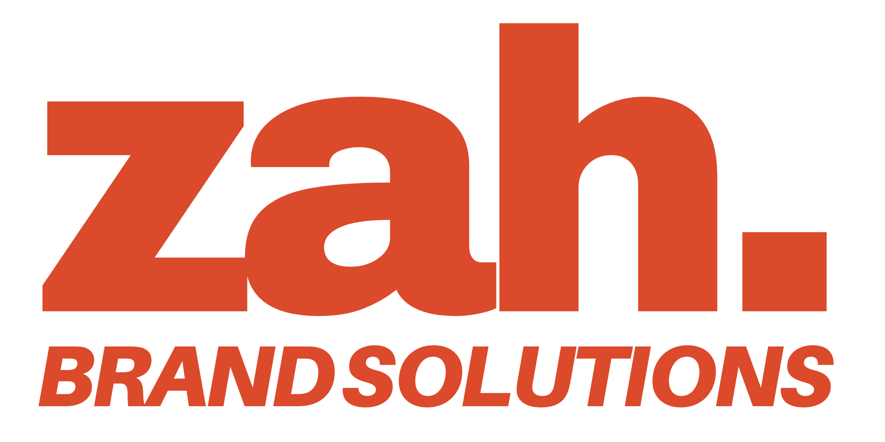

Atlas Copco · Portable Air / Growth concept
A connected experience. An accountable pipeline.
A more human way to grow.

Strategy by Zah White02 / THE CONNECTED EXPERIENCE
Touch a channel. Follow the signal.
See how an encounter becomes a conversation that someone owns.
The mission builder captures context. A tailored page and permission-based follow-up keep it useful. Eligible LinkedIn and YouTube audiences extend the conversation. The CRM preserves ownership and the next step.
03 / PLAY THE CUSTOMER EXPERIENCE
Six decisions. A brief built around you.
Try the experience your next customer could have.
Concept experience · rule-based personalization · no contact details requested · no messages sent
04 / THE CONTROL ROOM
Open a record. Log the next step.
Advance the clock and watch accountability become visible.
Validate the edition, enabled services and access first. Connect through approved interfaces; MCP is optional. AI can help summarize activity and surface exceptions. Workflow rules and people remain accountable. A dashboard cannot verify an unlogged call.
05 / EXPLORE THE ECONOMICS
Change follow-through and compare the outcome.
A transparent scenario, built from assumptions you can adjust.
Comparison holds all inputs equal except follow-through: baseline 50%; selected scenario uses your slider. Booked value is revenue, not profit or ROI.
Planning illustration only. These inputs are not Atlas Copco results, a forecast or a budget recommendation. Fractional wins represent expected values within the model.
06 / BUILD, PROVE, SCALE
Earn the right to scale.
Each horizon unlocks when the operating evidence supports it.
07 / THE PERSON BEHIND THE SYSTEM
Growth Marketing · Systems Strategy · AI Workflow Integration
I approach marketing as an interconnected system: what earns attention, what makes the experience useful, and what happens after someone raises their hand.
This is how I present an idea—by putting the experience in your hands. The next step is to build the pilot, measure what happens, and make it better.
Scan, explore, and follow along from your phone.
Prepared by ZAH Brand Solutions for an Atlas Copco Portable Air interview discussion. This is an independent proposal, not an official Atlas Copco application. All lead records, owners and activities in this demonstration are fictional. Mission choices stay in this browser. No C4C connection, real AI service, advertising or outbound messaging is activated.
The proposed workflow reflects the interview discussion. Reported marketing spend, rental share and sales thresholds require validation; no U.S. market ranking is claimed. Product imagery illustrates the discussion and does not establish final product fit.
Atlas Copco mobile air compressors · ZAH Workshop · Preserved version one